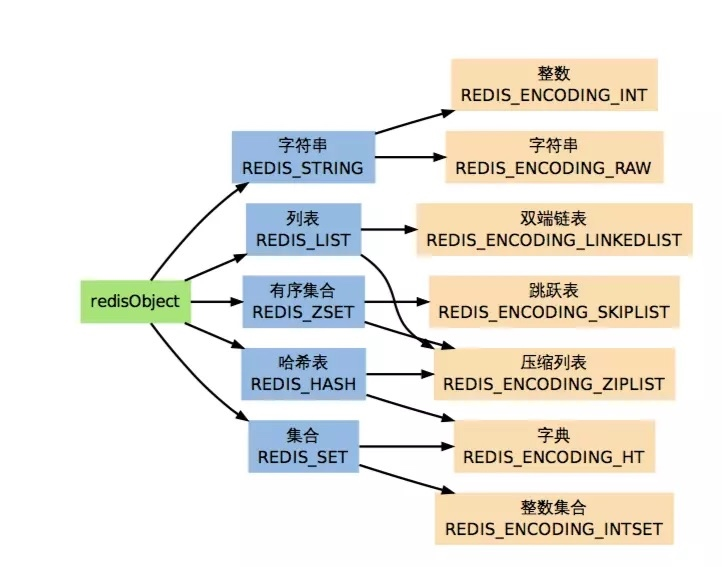

Redis特征整理学习
Redis特征
学习是一个从头开始的过程，于是看看Redis都是怎么发展的。
Redis历史升级
Redis2.6
1）键的过期时间支持毫秒
2）从节点提供只读功能
3）服务端支持Lua脚本
4）放开客户端连接数的硬编码限制
5）去掉虚拟内存相关功能等
Redis2.8
1）完善主从复制功能，实现增量复制
2）Redis设置明显的进程名，在系统中ps命令即可查看
3）发布/订阅添加pub/sub命令
4）Redis Sentinel第二版发布，较Redis 2.6更加完善，可以线上使用
5）可以通过config set命令设置maxclients等
Redis3.0
1）推出Redis的分布式集群 Redis Cluster
2）全新的embedded string对象编码结果，优化小对象的内存访问，在特定的工作负载下能大幅度提升性能
3）LRU算法提升
4）config set 设置maxmemory的时候可以设置不用的单位
5）新的Client pause命令，在指定时间内停止处理客户端请求等
Redis3.2
1）添加GEO功能
2）新的List编码类型quicklist
3）SDS在速度和节省空间上都做了优化
4）Lua脚本功能增强
5）新的RDB格式，仍兼容旧版RDB，同时加载速度上也有提升
6）Cluster nodes命令加速等
Redis4.0
1）psync2.0，优化了之前版本主从节点切换必然引起全量复制的问题
2）提供全新的缓存剔除算法LFU，并对已有算法进行了优化
3）提供了非阻塞del和flushall和flushdb功能，有效解决了删除bigkey可能造成的Redis阻塞
4）提供了RDB-AOF混合持久化格式
5）提供memory命令，实现对内存的更为全面的监控统计
6）Redis Cluster 兼容NAT和Docker
7）引入Jemalloc库，优化内存访问等等
Redis升级亮点
- 推出Redis的分布式集群 Redis Cluster
- 全新的embedded string对象编码结果，优化小对象的内存访问，在特定的工作负载下能大幅度提升性能
- LRU算法提升
- 新的List编码类型quicklist
- psync2.0，优化了之前版本主从节点切换必然引起全量复制的问题
- 提供全新的缓存剔除算法LFU，并对已有算法进行了优化
- 新的RDB格式，仍兼容旧版RDB，同时加载速度上也有提升
- Redis Cluster 兼容NAT和Docker
- 提供了RDB-AOF混合持久化格式
基础结构
从底层往上层整理相关疑问点，这样可以具体理清楚细节。
基础类型
Redis 五大数据类型是：
- string（字符串）是 redis 最基本的类型，一个 key 对应一 个 value 。string 类型是二进制安全的。意思是 redis 的 string 可以包含任何数据。比如 jpg 图片或者序列化的对象 。它也是 redis 最基本的数据类型，一个 redis 中字符串 value 最多可以是512M。
- hash（哈希）是一个键值对集合，是一个 string 类型的 field 和 value 的映射表，hash特别适合用于存储对象。类似Java里面的Map
- list（列表）是简单的字符串列表，按照插入顺序排序。你可以添加一个元素导列表的头部（左边）或者尾部（右边）。它的底层实际是个链表。
- set（集合）是string类型的无序集合。它是通过HashTable实现实现的。
- **zset(sorted set：有序集合) **set 一样也是string类型元素的集合,且不允许重复的成员。不同的是每个元素都会关联一个double类型的分数。redis正是通过分数来为集合中的成员进行从小到大的排序。zset的成员是唯一的,但分数(score)却可以重复。
对象类型
针对每个对象，有一个类型和一个编码字段，并还有引用和数据指针：
typedef struct redisObject {
unsigned type:4;
unsigned encoding:4;
unsigned lru:REDIS_LRU_BITS; /* lru time (relative to server.lruclock) */
int refcount;
void *ptr;
} robj;

命令处理流程
Redis协议
客户端发送命令的格式(类型)：
间隔符号，在Linux下是\r\n，在Windows下是\n
简单字符串 Simple Strings, 以 "+"加号 开头
格式：+ 字符串 \r\n
字符串不能包含 CR或者 LF(不允许换行)
eg: "+OK\r\n"
注意：为了发送二进制安全的字符串，一般推荐使用后面的 Bulk Strings类型
错误 Errors, 以"-"减号 开头
格式：- 错误前缀 错误信息 \r\n
错误信息不能包含 CR或者 LF(不允许换行)，Errors与Simple Strings很相似，不同的是Erros会被当作异常来看待
eg: "-Error unknow command 'foobar'\r\n"
整数型 Integer， 以 ":" 冒号开头
格式：: 数字 \r\n
eg: ":1000\r\n"
大字符串类型 Bulk Strings, 以 "\("美元符号开头，长度限制512M
格式：\) 字符串的长度 \r\n 字符串 \r\n
字符串不能包含 CR或者 LF(不允许换行);
eg:
"$6\r\nfoobar\r\n" 其中字符串为 foobar，而6就是foobar的字符长度
"$0\r\n\r\n" 空字符串
"$-1\r\n" null
数组类型 Arrays，以 "*"星号开头
格式：* 数组元素个数 \r\n 其他所有类型 (结尾不需要\r\n)
eg:
"*0\r\n" 空数组
"*2\r\n$2\r\nfoo\r\n$3\r\nbar\r\n" 数组包含2个元素，分别是字符串foo和bar
"*3\r\n:1\r\n:2\r\n:3\r\n" 数组包含3个整数：1、2、3
"*5\r\n:1\r\n:2\r\n:3\r\n:4\r\n$6\r\nfoobar\r\n" 包含混合类型的数组
"*-1\r\n" Null数组
注意：只有元素个数后面的\r\n是属于该数组的，结尾的\r\n一般是元素的